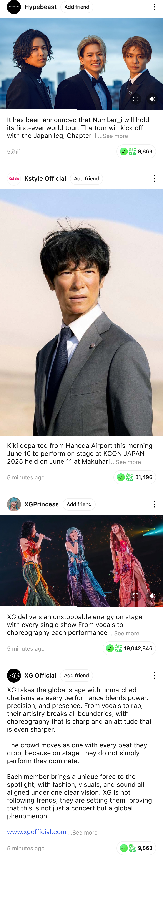
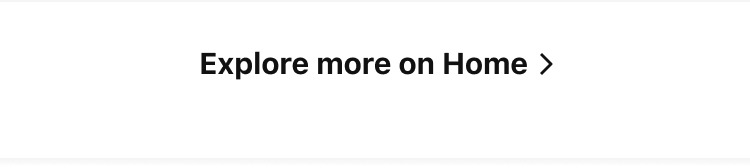

MTK 2nd Depth Motion
A. Full Width Bar


B. Capsule
SCROLL · 여기서 스크롤
A안
모션 옵션
설정 자동 저장
모션 스타일
슬라이드+페이드
슬라이드
페이드
듀레이션
260ms
이징
Ease (기본)
Ease-out (감속)
Standard (머티리얼)
Spring (오버슈트)
Ease-in (가속)
그린 전환
페이드
팝
교체
그린 페이드 속도
250ms
— 페이드 전용
반응 임계값
10pt
버튼 상태
ON
스크롤 방향
—
스크롤 위치
0 / 0
맨 위로 리셋
녹화(각 안의 ●)는 권한 팝업 없이 해당 화면을 750×1624로 바로 렌더링해요. 정지하면 .mp4 자동 저장 →
video-2mb
로 2MB 압축.